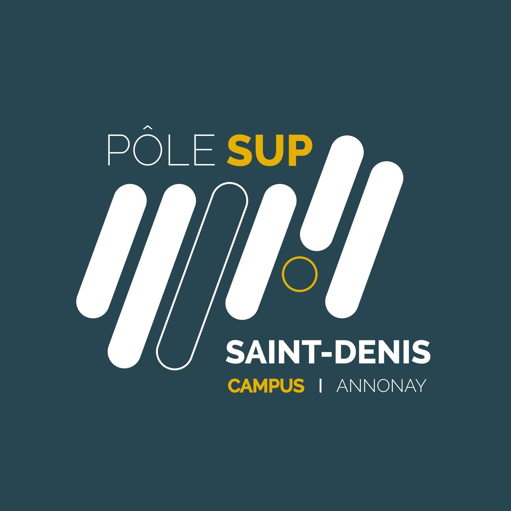

Liens rapides
07 48 61 52 38
adycabanel@gmail.com
GitHub
07 48 61 52 38
adycabanel@gmail.com
GitHub

Adrien Cabanel
BTS SIO (SLAM) - 2e année
2025 - 2027
Bourg Argental
Je m'appelle Adrien Cabanel, habite à Bourg Argental, et suis actuellement en BTS SIO option SLAM au pôle supérieur Saint Denis à Annonay.
J’ai fait un bac général avec les options Maths et NSI et j’ai enchaîné avec un BTS SIO option SLAM pour me consacrer à la programmation car le métier de développeur me passionne.
Je continuerais mes études en poursuivant avec une licence informatique et probablement avec une école d’ingénieur. Mon objectif à long terme est d’être un développeur de logiciels ou de jeux vidéo (ou de sites web).
L’objectif de ce portfolio est de vous donner un bref aperçu de mes compétences en programmation ainsi que de vous montrer les différents projets et stage réalisés.
Test
test2
Super Test